Project Documentation
This page covers the planning, production and testing behind The Keeper of Gull Rock, an interactive choose your own adventure website with 17 decision pages and 6 endings.
1. Problem identification and analysis
The problem
Reading is dropping off for students in Years 7 to 9. A lot of them say books are boring because nothing they do changes what happens. Meanwhile the same students will happily spend an hour on a phone game. The gap is not reading ability, it is control. There are not many short, free, readable stories where the reader actually makes the decisions and has a reason to go back and try again.
Target audience
Students aged 12 to 15, reading at about a Year 7 to Year 9 level, mostly on a school laptop or a phone. They have short blocks of free time, like a wet weather lunch or the last ten minutes of a lesson. They are used to games, so they expect a choice to matter and they expect to be able to restart instantly.
User needs
- Short pages, so one page can be read in under a minute
- Choices that are easy to understand and clearly lead somewhere different
- Big tap targets, because most of them will be on a phone
- More than one ending, so there is a reason to replay
- No sign up, no download, no cost
Factors considered
| Factor | How it shaped the design |
|---|---|
| Functional | Must work in any browser with no plugins. Every page is plain HTML and CSS, so nothing breaks if JavaScript is blocked on a school network. Pages are under 60KB so they load on slow wifi. |
| Social | The story is a ghost story, not a violent one. No gore, no swearing, nothing that would get it blocked by a school filter or upset a younger reader. The sound is off until the player presses play, so nobody gets blasted in a quiet classroom. |
| Economic | Total cost is zero. Hosted free on GitHub Pages, all artwork drawn by hand in SVG and the audio generated from scratch, so there are no stock image or sound licences to pay for. |
| Environmental | SVG images are a few kilobytes each instead of a few hundred, and the audio is a single short looped file instead of one per page. Less data transferred means less energy used per visit, which matters when hundreds of students load the same site. |
2. Design and planning
Story flowchart

Wireframes
Colour and font plan
| Role | Value | Why |
|---|---|---|
| Sea (background) | #0b1a2b | Very dark blue. Suits a night time storm and is easier to read for a long time than black. |
| Card | #13283f | One step lighter than the background so the story block lifts off the page. |
| Lamp (accent) | #ffd84d | Lighthouse yellow. Used only for headings and buttons so the eye always knows where the choices are. |
| Text | #f2f4f7 | Off white rather than pure white, which reduces glare on a dark background. |
| Heading font | Verdana, sans-serif | Wide letters, very readable on small screens. Used for the title, headings and buttons. |
| Body font | Georgia, serif | A serif font makes it feel like a story instead of a web app, and Georgia was designed for screens. |
All four colours are set as CSS custom properties in :root, so one change updates all 23 files.
Accessibility check on those colours
| Combination | Contrast ratio | Used for | WCAG AA (4.5:1) |
|---|---|---|---|
| Body text #f2f4f7 on card #13283f | 13.58:1 | Body paragraphs | Pass |
| Headings #ffd84d on card #13283f | 10.82:1 | h1 and page title | Pass |
| Button text #0b1a2b on button #ffd84d | 12.68:1 | Choice buttons | Pass |
| Caption #b9c9da on panel #0e2135 | 9.65:1 | Figure captions | Pass |
Timeline
| Week | Stage | Tasks |
|---|---|---|
| Week 1 | Research and proposal | Pick the problem, write up the audience and user needs, list the functional, social, economic and environmental factors |
| Week 2 | Design and planning | Draw the story flowchart, sketch wireframes, lock in the colour and font plan |
| Week 3 | Build the skeleton | Write index.html and the stylesheet, then copy the structure to all 16 decision pages |
| Week 4 | Write the story | Full story text on every page, including all 6 endings, then spell check |
| Week 5 | Multimedia and polish | Draw the images, add alt text, add the sound, check colour contrast and mobile layout |
| Week 6 | Test and evaluate | Click every link on 3 devices, run user testing with 4 people, fix what they find, write the evaluation |
3. Production: tools and safe, ethical practice
| Area | What was done |
|---|---|
| Tools | Hand written HTML5 and CSS3. No frameworks and no JavaScript. Version control with Git, hosted on GitHub Pages. |
| File structure | 24 HTML files in the root, one shared style.css, images in /img, audio in /audio. Naming is consistent: index.html plus page2 to page17 for decisions, and end1 to end6 for endings. |
| Code quality | Two space indentation throughout, comments above each block in the HTML and section comments in the CSS, semantic tags (header, main, article, figure, footer) rather than plain divs. |
| Ethical practice | Every image is original SVG drawn for this project and the storm audio was generated from scratch, so there is no copyright issue. No tracking, no cookies and no data collected from the player. |
| Accessibility | Alt text on all 11 images (10 story scenes plus the flowchart), lang="en" on every page, one h1 per page, a unique meta description per page, and prefers-reduced-motion support so the beam animation stops for anyone who gets motion sick. |
| Sustainable practice | Story pages load in about 6KB to 17KB, counting the HTML, the shared stylesheet and any SVG scene. This documentation page is the heaviest at about 90KB, because the flowchart is a detailed SVG. The storm audio adds 63KB on the seven pages that have sound, but preload="none" means it is only downloaded if the player presses play. Using SVG instead of photos and reusing one audio file is what keeps these numbers small. |
4. Testing
4.1 Link testing: every link on every page
All 40 choice links were checked by loading each page in Chromium and confirming the target file exists and opens. Page count: 17 decision pages, 6 endings, 0 dead ends, 0 pages that cannot be reached from the start.
| Page | Type | Links and where they go | Result |
|---|---|---|---|
index.html |
Decision | Climb the tower to check the lamp → page2.htmlRun to the radio room for help → page3.html |
Pass |
page10.html |
Decision | Row out to guide them in → end2.htmlBuild a bonfire on the headland → page16.html |
Pass |
page11.html |
Decision | Keep the channel open → page17.htmlSwitch the radio off → end3.html |
Pass |
page12.html |
Decision | Tell him the truth: William is gone → end4.htmlLook up the Hart family in the logbook → page13.html |
Pass |
page13.html |
Decision | Search for William's diary → page14.htmlClose the book and wait for morning → end5.html |
Pass |
page14.html |
Decision | Follow the sketch to the basement → page15.htmlLight a signal fire instead → page16.html |
Pass |
page15.html |
Decision | Race up and fit the fuse → end6.htmlLight a signal fire on the way → page16.html |
Pass |
page16.html |
Decision | Signal to the old steamer → end1.htmlSignal to the fishing boat → end6.html |
Pass |
page17.html |
Decision | Ask the captain for his name → page12.htmlCheck the old keeper's logbook → page13.html |
Pass |
page2.html |
Decision | Try to fix the lamp → page4.htmlFire the emergency flare gun → page5.html |
Pass |
page3.html |
Decision | Answer the voice → page6.htmlIgnore it and check the generator → page7.html |
Pass |
page4.html |
Decision | Go down to the basement → page8.htmlFlash a torch in Morse code instead → page9.html |
Pass |
page5.html |
Decision | Sprint down to the beach → page10.htmlRadio a warning to the boat → page11.html |
Pass |
page6.html |
Decision | Ask the captain for his name → page12.htmlCheck the old keeper's logbook → page13.html |
Pass |
page7.html |
Decision | Head to the basement for parts → page8.htmlRead the diary → page14.html |
Pass |
page8.html |
Decision | Grab the fuses → page15.htmlGrab the logbook → page14.html |
Pass |
page9.html |
Decision | Flash back your name → page16.htmlFlash: TURN NORTH NOW → end1.html |
Pass |
end1.html |
Ending | Play again → index.html |
Pass |
end2.html |
Ending | Play again → index.html |
Pass |
end3.html |
Ending | Play again → index.html |
Pass |
end4.html |
Ending | Play again → index.html |
Pass |
end5.html |
Ending | Play again → index.html |
Pass |
end6.html |
Ending | Play again → index.html |
Pass |
4.2 Device testing
| Device | Screen size | What happened | Result |
|---|---|---|---|
| Phone | 375 x 667 (iPhone SE) | Card padding drops to 1.25rem, buttons stay full width and 48px tall, no sideways scrolling | Pass |
| Tablet | 768 x 1024 (iPad) | Card centred at its 640px maximum, images scale to fit | Pass |
| Laptop | 1280 x 800 | Card centred, beam animation visible behind the card | Pass |
Automated check across all 24 pages at each of those three widths: 0 console errors, 0 failed file requests, 0 pages scrolling sideways, 0 images missing alt text, 0 choice buttons under 44px tall.
4.3 Problems found and fixed
| Round | Problem found | Fix |
|---|---|---|
| Round 1 | All 22 pages linked to documentation.html, which did not exist yet. Every footer link returned a 404. | Built the documentation page so all 22 links resolve. |
| Round 1 | No images or sound anywhere. The only multimedia was the CSS beam animation. | Drew 10 original SVG scenes and generated an original storm audio loop. Every image got an alt attribute. |
| Round 1 | The green steamer appeared on page16 with no build up, so the twist felt random. | Planted four clues earlier: the green glow on page2, the stuck green dial on page3, the pencilled photo on page7 and the circled sketch on page13. |
| Round 1 | Story paragraphs were only 2 to 3 sentences, so pages felt thin. | Rewrote every page to 4 to 6 sentences and made the endings longer than the decision pages. |
| Round 1 | Ending pages had both a Play again button and a Restart link in the footer, which did the same thing. | Removed Restart from ending footers and left one clear Play again button. |
| Round 2 | The documentation page scrolled 4px sideways on a 375px phone. The story card used width: 100% with padding added on top of it, so the card came out wider than the screen. | Added box-sizing: border-box to all elements so padding counts inside the width. This was affecting every page, not just this one. |
| Round 2 | The wide testing tables pushed the whole page wider on a phone instead of scrolling inside their own box. | Moved the min-width onto .table-scroll table only, so narrow tables wrap and only the long ones scroll sideways. |
| Round 2 | The flowchart image was fixed at 800px wide and pushed past the edge of a phone screen. | Added a rule so documentation images scale to 100% of the card width. |
| Round 3 | Page11 sent the reader back to page6, a page they may already have read, which looks like a broken link rather than a real choice. | Wrote page17, "Closer Than It Should Be", so that route has its own scene before carrying on to page12 or page13. Decision pages went from 16 to 17. |
| Round 3 | Sound was on 1 page out of 23, which is not enough to count as multimedia across the site. | Added the same audio block to all six ending pages, so sound now plays on 7 pages. |
| Round 3 | Section 3 claimed the site was "well under 200KB", which was a guess and not a measurement. | Measured the real page weights and put the actual figures in. Those numbers are now generated from the files themselves when this page is built, so they cannot drift out of date. |
| Round 3 | Section 3 said 10 images have alt text. The flowchart on this page is an eleventh image. | Corrected the count to 11. |
| Round 4 | Design review of the opening page: the heading sat above the scene image, so the first thing on screen was a line of text rather than the picture. | Moved the image above the h1 so the scene lands first. |
| Round 4 | A player who reached an ending had no way of knowing other endings existed, so there was nothing prompting a replay. | Each ending now says which one it is out of six and states that the others are reachable by different choices. |
| Round 4 | The 1954 logbook entry was unsigned, so there was nothing linking it to the diary on page7 or the name carved on the cottage door. | The entry is now signed W. Hart, which ties the three clues together. |
| Round 5 | Re-checked all 24 pages in Chromium at 375px, 768px and 1280px: 0 console errors, 0 failed requests, 0 pages scrolling sideways, every image loaded with alt text, every choice button at least 44px tall, every page has a unique meta description. | No changes needed. |
5. User feedback
Method: sit four people from the target audience in front of the site on their own device, say nothing while they play, and write down where they hesitate. Watch five specific moments rather than the whole run, because trying to notice everything means noticing nothing.
What to watch for
| Where | What to look for |
|---|---|
index.html | Do they notice the audio player at all, or scroll straight past the image? The player sits below the story text, so it is easy to miss. |
page4 | The Morse code choice. Does "Flash a torch in Morse code instead" read clearly, or do they hesitate because they are not sure what it does? |
page11 and page17 | This route used to loop back to a page the reader had already seen. It now leads to its own page17 instead. Check that the new page reads as a continuation and not as a repeat. |
page16 | The two lights. Did the green clues on pages 2, 3, 7 and 13 land? Ask straight afterwards: "did you see that coming?" If they say no, the foreshadowing is too quiet. |
| Whichever ending they hit | Do they tap Play again or close the tab? This is the replay evidence, and it is the one thing you cannot get by asking. |
Three questions afterwards
- Did any choice feel pointless?
- Did you want to replay it?
- Was anything hard to read?
For each tester record the device, the exact spot they hesitated, what they said, and what was changed because of it. A row that says no change was made, with the reason, is fine and shows judgement.
Record each tester separately. Vague notes like "they liked it" earn nothing. The example row below shows the level of detail needed.
Not yet completed. The rows below are blank because user testing has not been run. The three changes logged as Round 4 in section 4.3 came from a design review, not from users, and they are recorded there rather than here so the two are not confused.
| Tester | Device | What they said or did | Change made |
|---|---|---|---|
| Example | iPhone 12 | Got to page9 and said "I don't know what Morse code does", then tapped the other choice. Read the ending text twice. | Reworded the page9 choice to "Flash a torch in Morse code" so it says what the action is. |
| Tester 1 | |||
| Tester 2 | |||
| Tester 3 | |||
| Tester 4 |
6. Evaluation
Strengths
- The branching holds up. 17 decision pages, 6 genuinely different endings, no dead ends and nothing unreachable, which was confirmed by testing rather than assumed.
- The twist is earned. Four separate clues point at the green steamer before it appears, so the ghost ship ending feels planned instead of random.
- Paths rejoin on purpose. Several routes meet at page14 and page16, which keeps the page count manageable without making the choices feel fake, because the reader arrives with different information each time.
- It is genuinely accessible: all four colour combinations pass WCAG AA, every image has alt text, and the animation respects reduced motion settings.
- One stylesheet drives 23 pages, so the layout is identical everywhere and a colour change is a one line edit.
Weaknesses
- Choices are not remembered. Firing the flare on page5 has no effect on any later page, so some decisions change the route but not the world.
- The artwork is simple shapes. It sets the mood but it will not impress anyone next to a real illustration.
- There is still only one sound in the project. It now plays on the opening page and all six endings, but a storm loop fits the quiet endings less well than a sound written for each one would.
- Endings 1 and 6 are both good outcomes and sit quite close together in tone.
Improvements, in the order worth doing
- Store one or two flags in
localStorage, such as whether the flare was fired or the diary was read, and change a sentence on a later page to match. That would turn the branching into something closer to a real game state. - Add an endings tracker, so a replayer can see which of the 6 they have found. That is the single best replay hook and it is about fifteen lines of code.
- Replace the shared storm loop on the endings with a sound that suits each one, such as a ship's bell for the ghost ship and gulls for the morning inspector.
- Pull endings 1 and 6 further apart, so that one is clearly the lucky escape and the other is clearly the earned win.
Syllabus outcomes
| Outcome | Where it is evidenced |
|---|---|
| TE5-1DP, define problems and design opportunities | Section 1: problem, audience, user needs and the four factors |
| TE5-2DP, generate and document design ideas | Section 2: flowchart, wireframes, colour and font plan, timeline |
| TE5-3DP, safe, ethical and sustainable digital practice | Section 3: original assets, no data collection, accessibility, file size |
| TE5-4DP, testing and evaluation | Sections 4, 5 and 6: link and device testing, problems and fixes, user feedback method, evaluation |